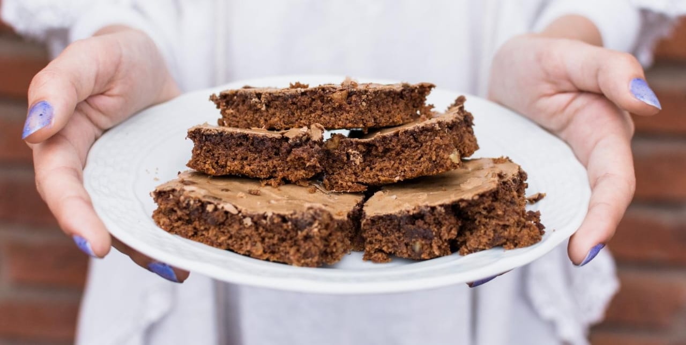
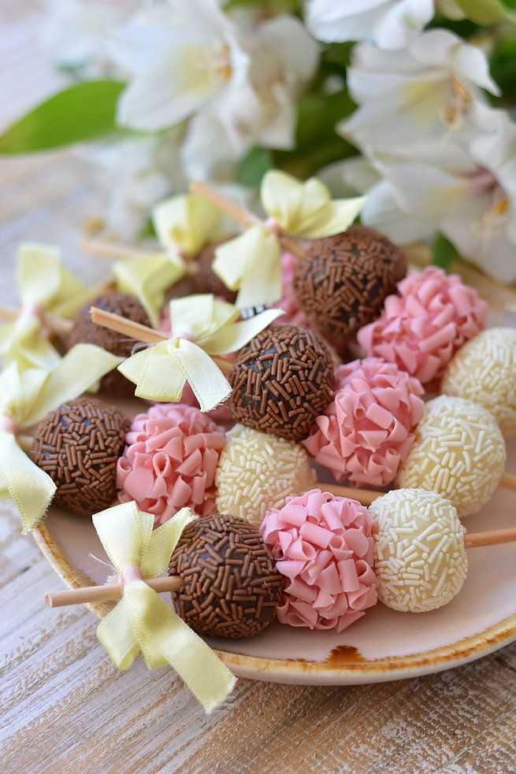
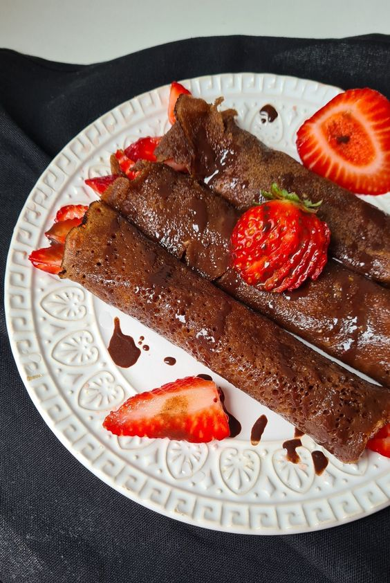

Good Candy
Purpose
Our mission is to create moments of pure delight, crafting confections that spark happiness and sweet memories. We are dedicated to delivering the finest, handcrafted treats that sweeten your life. Our vision is to bring sweetness and joy to everyone through the passion and talent of our confectioners, delivering unique flavor experiences that will leave a smile on every face. Our values are simple: Quality, Innovation, and Customer Happiness. Creativity and Integrity add the magic. We cherish our community and sweeten the world for all.
Audience
We cater to a diverse audience, ranging from children who love sweets to seniors who are true dessert aficionados. Our products are designed to please the palate of all ages, creating moments of happiness for all sweet enthusiasts
Branding
Website Logo

Style Guide
Color Palette
Palette URL: https://coolors.co/396e94-e7c24f-a43312-381d2a-aabd8c| Primary | Secondary | Accent 1 | Accent 2 |
|---|---|---|---|
| #F9A03F | #972D07 | #FDFFFF | #2A2B2E |
Typography
Heading Font: Kanit
Paragraph Font: Fira Sans
Normal paragraph example
In our sweet journey, excellence is at the heart of everything we do. Each of our candies is carefully crafted to provide an unparalleled experience of flavor and happiness. Our passion for sweetness is evident in every bite, and our commitment to quality is the essence of our mission. Join us and dive into a world of delicious flavors, where candies become sweet memories, and joy is the secret ingredient we infuse into every sweet we create
Colored paragraph example
In our sweet journey, excellence is at the heart of everything we do. Each of our candies is carefully crafted to provide an unparalleled experience of flavor and happiness. Our passion for sweetness is evident in every bite, and our commitment to quality is the essence of our mission. Join us and dive into a world of delicious flavors, where candies become sweet memories, and joy is the secret ingredient we infuse into every sweet we create
Navigation
Site Map
Content
Home page
We love what we do. We enjoy sweetening your life with premium treats made with love and care. At the core of what we do is an unwavering passion. We love the art of confectionery and take immense pleasure in sweetening every moment of your life with our noble delights, crafted with dedication, love, and care. In the kitchen of good-candy, each sweet is more than a recipe; it's an expression of affection. We choose ingredients of the highest quality and dedicate meticulous care to every step of the creation process. Each bite is a unique experience, a celebration of the love we put into every piece. Come indulge with us and discover the unparalleled taste of sweets made with passion. We not only aim to satisfy your palate but to c reate sweet memories that will linger with you for a long time. At good-candy, we believe sweetness goes beyond taste; it's a gesture of care that we are eager to share with you.
Images for the Home page
  menu
Picture yourself wandering through a wonderland of colors and aromas, where each candy is a tiny masterpiece waiting to be discovered. Our commitment to quality and passion for sweetness is evident in every piece, as we aim to elevate your ordinary moments into extraordinary experiences. The journey through our tempting menu is an exploration of happiness, with each bite a symphony of flavors that transcends the ordinary. Join us on this delightful adventure, where the sweet taste of happiness is not just a promise but a guarantee. 🍬✨
Images for the Page 2


.jpeg)


Page 3
Discover the sweetness of excellence with our 100% Brazilian company! Celebrating one year in the market, we cultivate the art of delighting taste buds with professionalism. From artisanal preparation to careful presentation, each sweet is a celebration of our passion for quality. Feel the pride of supporting local talent while savoring the best in sweets. Come celebrate with us a year of delicious experiences, where professionalism and flavor meet.
Indulge in the exquisite taste of our sweets crafted in our own factory! We take pride in using the highest quality ingredients to ensure each treat is a symphony of flavor. From rich chocolates to luscious fruits, our commitment to excellence begins with sourcing only the finest components. Our dedication to crafting delectable delights with top-tier ingredients is a testament to the passion embedded in every confection. Experience the essence of quality with every bite from our own production haven
Our mission is to create moments of pure delight, crafting confections that spark happiness and sweet memories. We are dedicated to delivering the finest, handcrafted treats that sweeten your life
Our vision is to bring sweetness and joy to everyone through the passion and talent of our confectioners, delivering unique flavor experiences that will leave a smile on every face.
Our values are simple: Quality, Innovation, and Customer Happiness. Creativity and Integrity add the magic. We cherish our community and sweeten the world for all.
Images for the Page 3


Wireframes
Home
I liked very much the color in the home and the projeict of designer, I chose the theme like candy story because here in Brazil I realize a lot company in this segment

Menu
it's essencial to have a menu for a company of this type

About us
it's also necesary to show the manufacturing quality of the product